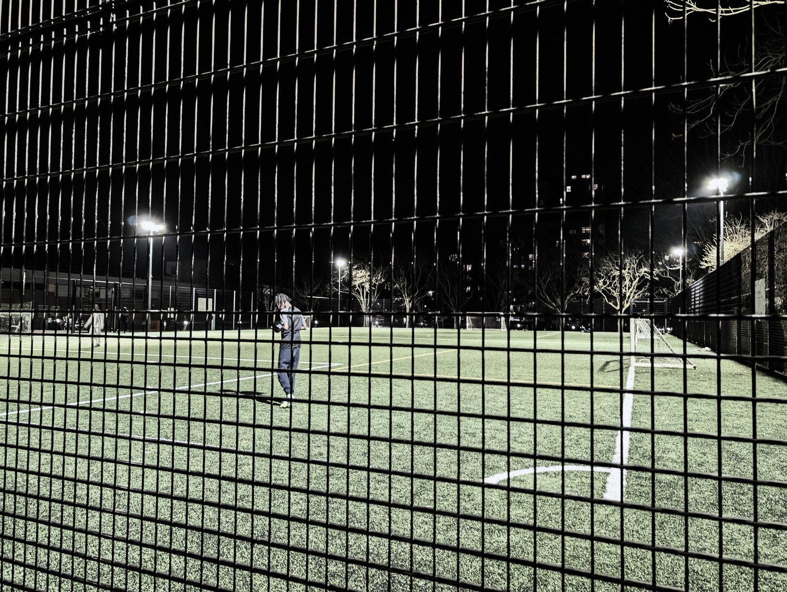

MOOWS / Issue 01 · August 2026
Moshe watches… Football at Rosemary Gardens, N1
A sobering 5- a side after a fight with Nadia’s brother
After an explosively short argument with Nadia's brother, I crossed Southgate Road to the Rosemary Gardens football pitches. Nadia was moving north – LS1 north – and while we still love, we will gradually cease to be lovers. I spent the afternoon drinking with her, first laughing together, later pleading and bargaining for another hour. Then her brother came to help her move. It was none of his fucking business anyway, the vague cunt.
The Rosemary Gardens football pitches are wider and longer than your average ground, easily big enough for 7-a-side and the goals too are bigger. It also has impressively strong floodlights and the type of fences that rattle loudly when someone overshoots the goal. Not a place for the timid. I immediately felt like a foreigner.
Tonight there were four 5-player teams. 'Blue shirts' team had won their first game 3-0 against the 'No shirts' team in convincing fashion, and were my favourites to win the tournament. (The tournament was my brainchild. I called it the RG tournament and the teams seemed mildly supportive of this idea). Their star player was Yakub, a skinny teenager who had a surprisingly strong left and fantastic acceleration. It turns out the blues were a family team: Yakub's older brother, at least a decade older, was goalie, and his cousin was the muscular no-nonsense 50:50. They started their second game the same way they finished the first and were already 2 goals ahead of a different 'no shirts' team. I asked but they didn't want to choose a different name.
Sasha calls me to ask how I'm doing. Such a fine soul.
We talk about memories and he tells me about his strongest memory. He was playing with a friend who's younger and he goaded him on to punch a glass wall.
'Why?' 'Because I was curious, I guess'. There was a lot of blood and then the kid's parents came over to Sasha's house and shouted at his parents and at Sasha. He remembers crying. It's not his first memory, but it's his strongest. We hang up. No message from Nadia.
The team waiting to come up is missing two players and they ask me if I want to play. I pause. Astroturf makes me think of grazed knees and asthma, but, flattered, I ask him what they're called. Miko's team; he's Miko. Miko notices my torn T-shirt and seems to regret asking. I dither, and instead they choose 2 of the 'no shirts' players.
The last game is more levelled, luckily, because the guys agreed that they will reshuffle the teams if the blues win again. I suspect that blues are taking it easy because they want to stay together. But then Yakub does his thing again from the left and flashes a high shot from 12 meters. A minute later, it's a header from a bald guy in his late 30s, who doesn't look like he's related to Yakub, perhaps a neighbour. Another win – the blues take the tournament but I'm the only one excited about it. I approach Yakub to ask for a picture for the column. He thinks i’m mad.
I took a cheeky snap of Yakub as everyone was leaving. He's even skinnier in real life.
